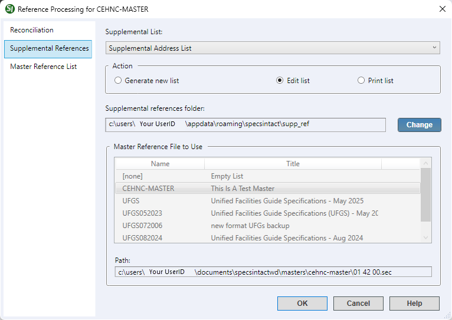

This command can only be executed from the SpecsIntact Explorer's Process menu.
The Supplemental References tab provides an automated option for managing the Supplemental List, Supplemental Address List, or Supplemental Reference List within the selected project. Once generated, you can easily edit the existing supplemental lists or even print its entire contents for a complete overview.
 The available options in SpecsIntact differ between Jobs and Masters, reflecting their distinct purposes and requirements. The Master Reference List tab is unique to Masters.
The available options in SpecsIntact differ between Jobs and Masters, reflecting their distinct purposes and requirements. The Master Reference List tab is unique to Masters.
 Before making significant changes to the Supplemental Lists, it's always recommended to create a backup first. You can do this easily by going to the File menu > Backup and Restore.
Before making significant changes to the Supplemental Lists, it's always recommended to create a backup first. You can do this easily by going to the File menu > Backup and Restore.
The Supplemental Address List streamlines the automatic inclusion of local, county, and state Reference addresses within UFGS 01 42 00 Sources for Reference Publications, upon the creation of new Jobs. SpecsIntact will automatically populate UFGS 01 42 00 with addresses for local Reference-issuing organizations stored in the Supplemental Address List when new Jobs are created from the UFGS.
 SpecsIntact merges the Reference-issuing organizations from the Supplemental Address List into the Job's 01 42 00 Section when new Jobs are created.
SpecsIntact merges the Reference-issuing organizations from the Supplemental Address List into the Job's 01 42 00 Section when new Jobs are created.
To effectively utilize the Supplemental Address List feature for Jobs, it is imperative to update the Supplemental Address List prior to creating a new Job. Following Job creation, any local (e.g., county or state) Reference-issuing organizations, including their corresponding information, should first be added to the Supplemental Address List. Subsequently, the Reference Organization can be copied and manually inserted into the current Jobs 01 42 00 Sources for Reference Publications Section. This two-step process for new local Reference-issuing organizations guarantees the accuracy of information for the current Job and any subsequent new Jobs.
SpecsIntact offers the flexibility to create a new Supplemental Address List either as an empty list for manual additions or from any local Master whose 01 42 00 Sources for Reference Publications Section contains addresses for local (e.g., county or state) Reference-issuing organizations. To avoid duplicate addresses, the list should be created from a Master Section where organization addresses are alphabetized by organization name, consistent with the UFGS 01 42 00 Section.
The Supplemental Reference List is designed for user-specific requirements to facilitate compiling a custom set of References, specifically for standards not incorporated within the UFGS Master Sections. Maintaining the Supplemental Reference List eliminates the need to manually add the Reference-related information into the Section's Reference Articles.
SpecsIntact streamlines the integration of References within project specifications. This automation, driven by a dedicated set of tags, populates and reconciles References within both the Reference Articles and the Supplemental Reference List. This ensures that only actively cited publications are included during processing, provided all information is accurately tagged. Upon initiation of the Reference Reconciliation process, the software identifies all References absent from the Section's Reference Articles. It then scans the Supplemental Reference List from which the missing References are extracted and subsequently incorporated into the Section's Reference Articles. This reconciliation is exclusively viewable in the Processed (.prn) files or PDF documents, not within the Section (.sec) files.
 Click the tabbed commands on the image below to see how to use each function.
Click the tabbed commands on the image below to see how to use each function.

 The OK button will execute and save the selections made.
The OK button will execute and save the selections made.
 The Cancel button will close the window without recording any selections or changes entered.
The Cancel button will close the window without recording any selections or changes entered.
 The Help button will open the Help Topic for this window.
The Help button will open the Help Topic for this window.
Users are encouraged to visit the SpecsIntact Website's Support & Help Center for access to all of our User Tools, including Web-Based Help (containing Troubleshooting, Frequently Asked Questions (FAQs), Technical Notes, and Known Problems), eLearning Modules (video tutorials), and printable Guides.
| CONTACT US: | ||
| 256.895.5505 | ||
| SpecsIntact@usace.army.mil | ||
| SpecsIntact.wbdg.org | ||